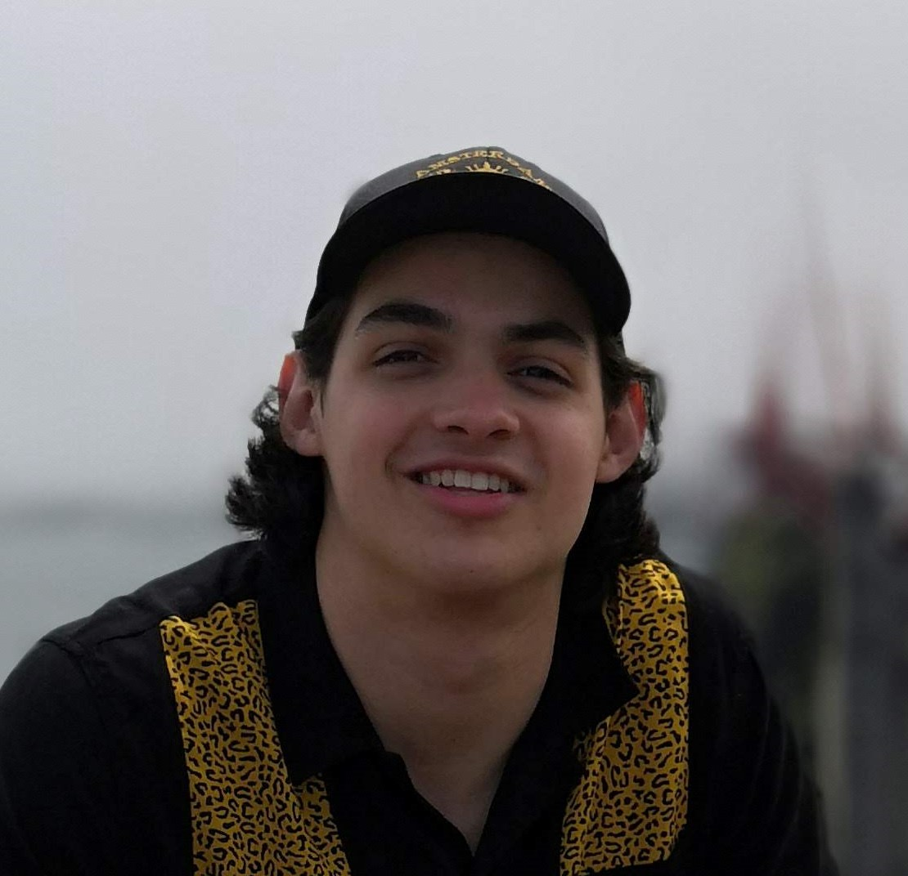
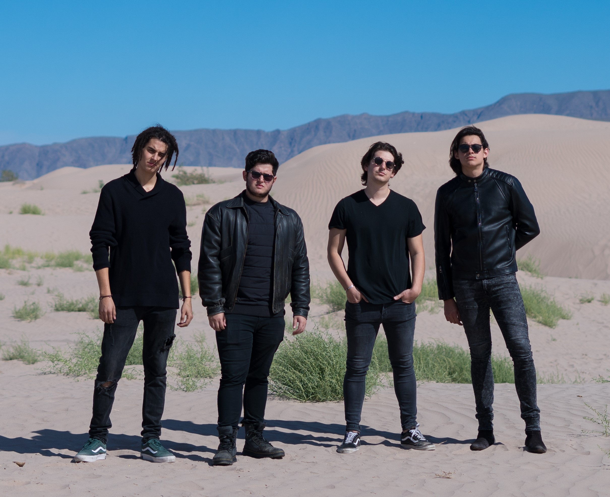
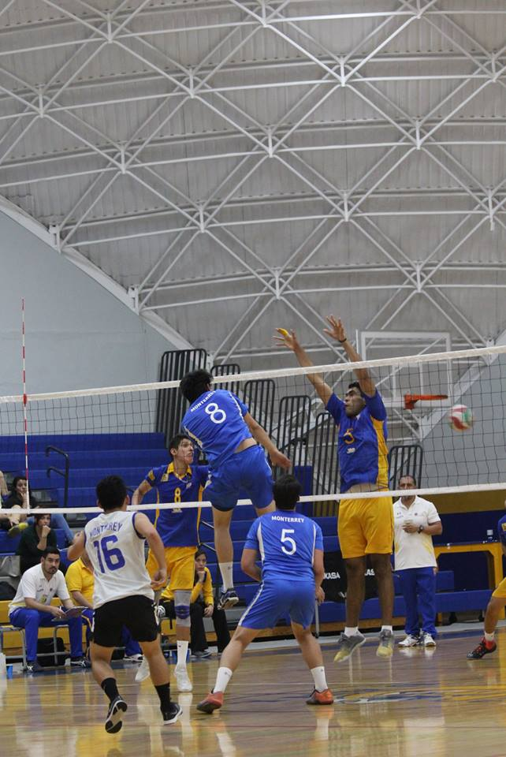

Álvaro Rodríguez's Portfolio
Hi everyone!.
Hi everyone I'm Álvaro Rodríguez from Monterrey México and I study Computer Science at Tec de Monterrey.
I love music ! I play bass and guitar in a rock band called Los Insurgentes, check them out!.
Spotify ----> Los Insurgentes

 ITESM Volleyball Team
ITESM Volleyball Team
- I'm the middle blocker for the University's team. I've played Volleyball since I was 13. I'm the number 8 on the photo, lol.
Projects
Interactive Campus VideoGame- Developed a video game using Java of Tec de Monterrey Campus, which enabled a group of 14 freshmen students to get to know the campus better in an interactive way.
- Worked as the Database Manager using MySQL and responsible of the testing cases, also participated on the movement functionality using a sprite sheet algorithm.
Medical SQL Database Developer- Designed a SQLServer database to help local doctors track their patients medical history and automate reporting.
- Personally responsible for creating ERD and developing SQL tables.
Click here to get a random message: